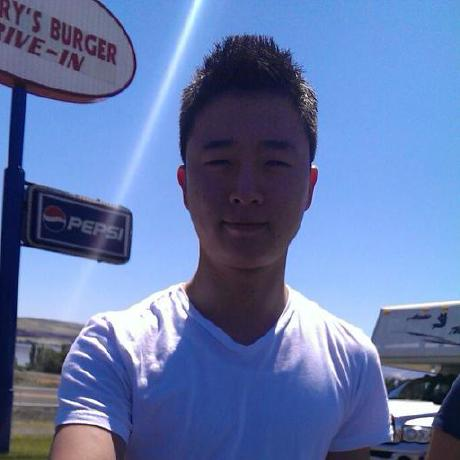
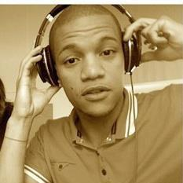

 My name is James and I'm someone who is just stepping into coding. My limited experience would boil down to making websites in the past, but mostly using HTML. So far this has been an interesting learning experience with skills I'd like to see myself use in the future. Outside of this you can usually find me at a buffet. My drink of choice: Soju.
 I'm Crystal! My cousin reccomended codefellows to me in 2015, so I took the foundations 1 course while living in Bellingham.
I loved it so much, I decided to move a little closer, and continue my coding education.
When I'm not coding, I enjoy reading, painting, and going on roadtrips. My favorite drink is Patron!
I'm Crystal! My cousin reccomended codefellows to me in 2015, so I took the foundations 1 course while living in Bellingham.
I loved it so much, I decided to move a little closer, and continue my coding education.
When I'm not coding, I enjoy reading, painting, and going on roadtrips. My favorite drink is Patron!
 I'm Tre. I like to play ball. I am drinking coffee at 4:37PM and I enjoy talking to women. Hopefully they enjoy talking to me, as well. I will fill this with more content when I can get to it. My drink of choice is a sweet, sweet Lemon Drop.
Tracey is a first year code slinger, who is continually questing for new knowledge. In the past, she obtained a BA in Food Science Human Nutrition--Dietetics from WSU. After college, she took some time off and bartended for a couple years. She got a job at a Nutrition Software Company, where her interest in becoming a developer materialized. When not learning code, she can be found making coffee, reading, or traveling. Buy me a drink of: Jameson or Weiss bier